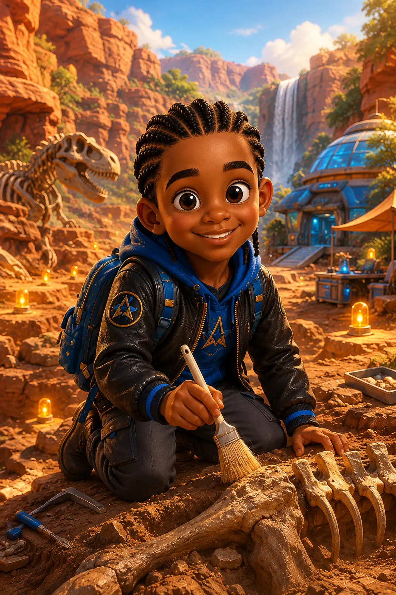
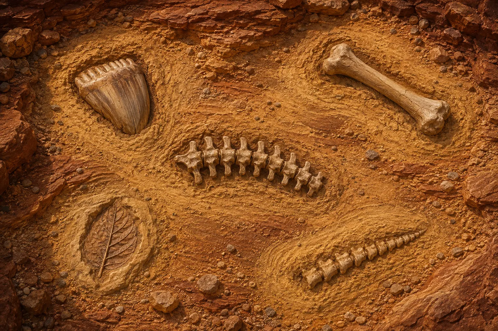

DISCOVERY DIG 01TRAINING MISSION · CANYON LAB
Five fossil signals are buried in the canyon.
Your job is clear: scan the sand, then drag your finger gently over the glowing area like a real fossil brush. Clear the sand to reveal five clues and identify the dinosaur.
🔎 Explore🦴 Investigate🧩 Rebuild🌿 No violence
Who will lead the dig?
MISSIONBrush training
FOSSILS0/5
STARS0 ★
PROGRESS
LIVE CANYON EXCAVATION
Brush practice
SAND CLEARED0%
1 · SCAN→2 · DRAG TO BRUSH→3 · EXAMINE

Drag your finger over the glowing sand
EVIDENCE TRAY
What have we uncovered?
?????
Brush the glowing practice patch three times.